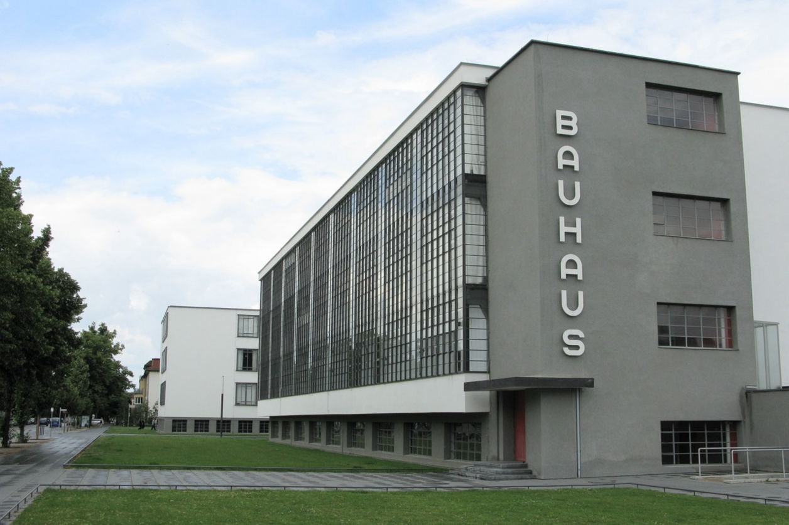
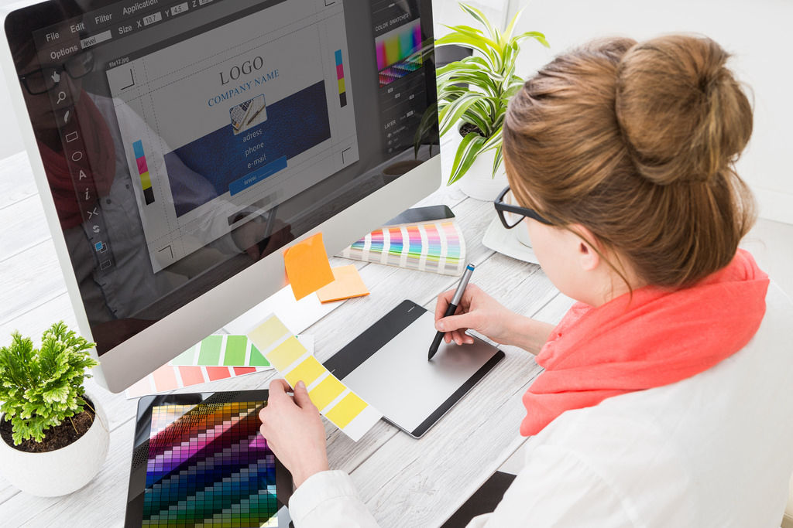
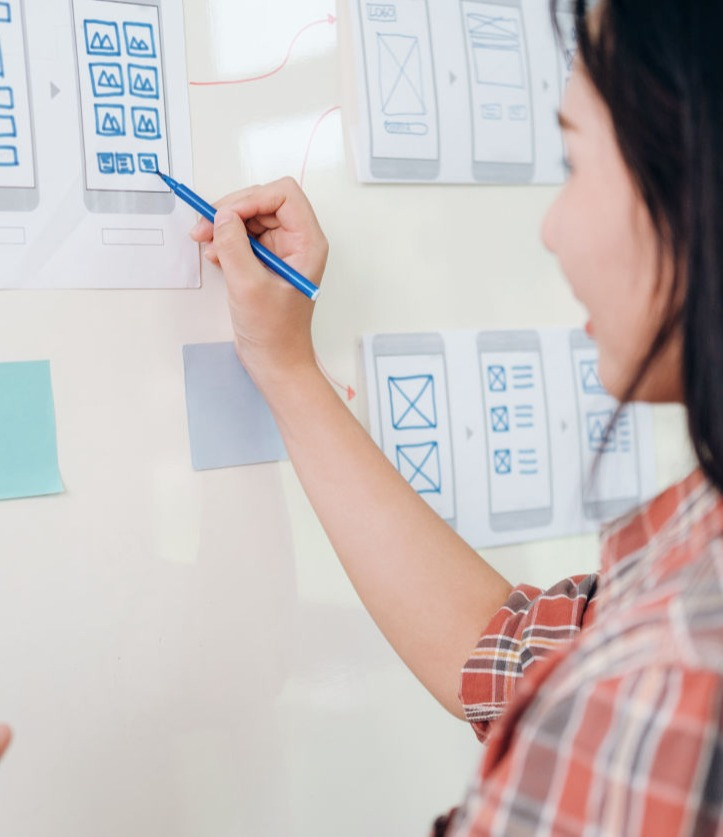

Free AI Website Maker他们看似走在不同的路上...
一个探索人心的深处，一个描绘世界的形状。
但在思考方式与核心精神上，他们有着惊人的相似：
都以「理解人」为起点，以「改善生活」为目标。
心理学起源于哲学，
从古希腊对“人为何如此思考”的探问出发。
直到冯特建立首间心理学实验室,思想首次被科学地观察与测量。
从此，心理学成为探索人类情绪与行为规律的科学。

设计的起点源于对“人”的理解。18世纪的工业革命中，
机器取代了手工，产品开始被大量制造。
19世纪的包浩斯（Bauhaus）提出革命性理念：
「设计不只是装饰，而是一种思考方式。」
两种职业的近代发展：从理论走向应用，从个人走向社会
20世纪中叶，心理学家与设计师都开始“走进现实”，
心理学家与设计师都不再只谈理想，而是进入人的生活。
心理学从实验室走向日常。
从临床到教育，从组织到社会。
心理学家开始帮助人改变行为、恢复平衡。

设计从“美”延伸至“问题解决”。
设计师开始参与企业策略与品牌系统，
在科技兴起的年代，他们成为“体验创造者”。
两种职业的现代发展：人性 × 科技 × 永续
进入21世纪，心理学与设计再度交汇。
一个研究人心的变化，一个打造与人相处的界面。
他们共同面对一个时代课题：
「当科技改变生活，我们还能理解人吗？」
现代心理学已不只是治疗，更是“提升生活品质”的科学。
斯坦福大学研发的Woebot以认知疗法为基础，
通过聊天帮助人管理情绪。
心理学与AI结合，让“关怀”更普及。
设计师如今不只是造物者，而是社会系统的策划者。

IKEA鼓励顾客回收旧家具再造，
让“设计”成为一种社会心理行动，唤醒人们对永续的共鸣。
让团队亲自入住房东家中，体验“信任”与“陌生人连接”。
这种做法结合了心理学的观察与设计思维的实践，打造出真实且温度的体验。
.
Free AI Website Maker